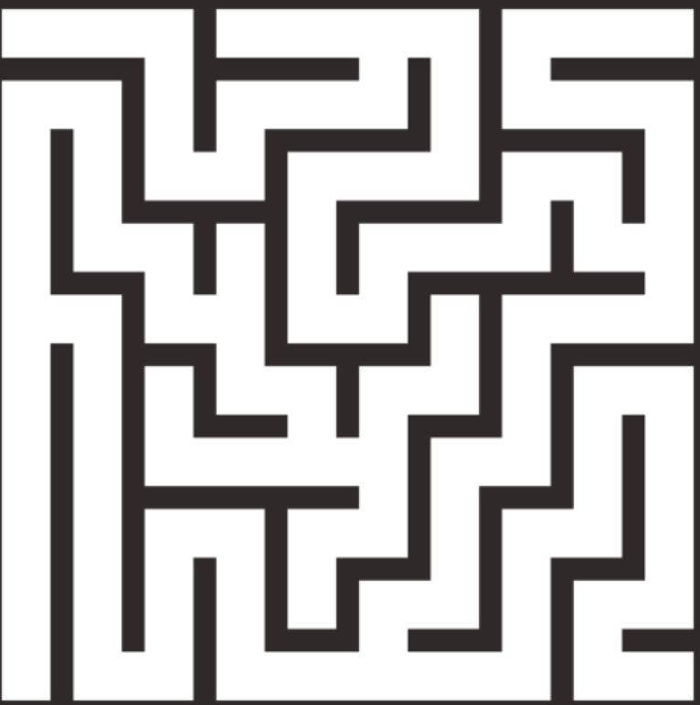

Banking system.
made using C code.
Guess the Number GAme.
Made using C++ code.
Car DAmage Detection program.
Implements Machine learning.
Expense Tracker.
Java, JDBC and MySQL
This project involves developing an expense tracking application that offers users the ability to manage their expenses effectively. This project involves developing an expense tracking application that offers users the ability to manage their expenses effectively. This project involves developing an expense tracking application that offers users the ability to manage their expenses effectively.
This project uses programs to do all the
calculations for an individual like transferring money, crediting
money and taking out loans. It includes a login and registering for
extra safety of the user.
The game generates a random number between 1 and 100, and then prompts the user to guess the number. The user is allowed to guess the number multiple times until they guess the correct number. Mask R-CNN Model to detect the area of damage on a car. The rationale for such a model is that it can be used by insurance companies for faster processing of claims if users can upload pics and they can assess damage from them.  This project involves developing an expense tracking application that offers users the ability to manage their expenses effectively.Maze Solver.
BFS ALGORITHM
SPT PolyRecycle Datahub.
SQL
This system aims to address key challenges in the recycling industry by organizing,
storing, and retrieving data pertaining to polymer types, recycling processes
▸ The project seeks to streamline data management processes, facilitate research and
analysis, and promote sustainable practices in the polymer recycling domain